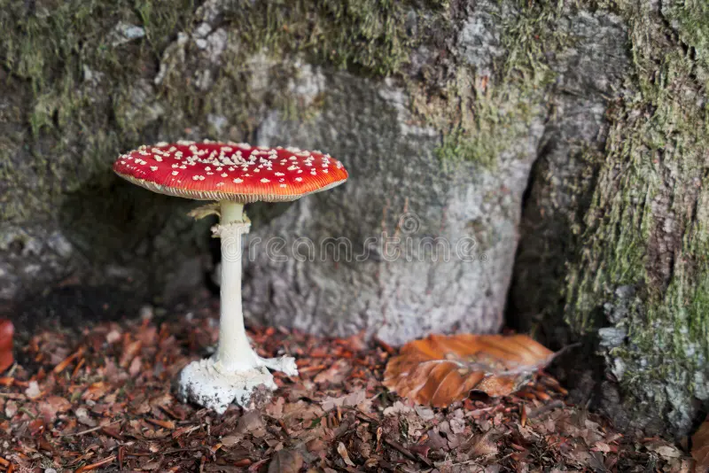
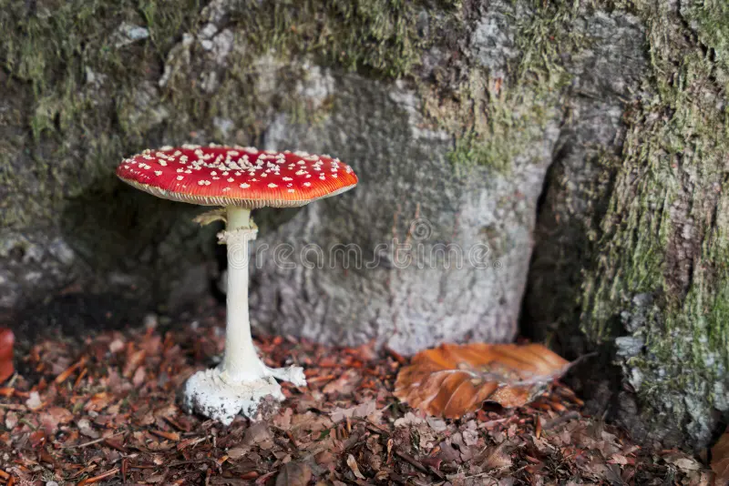

Introduction
The Fly Agaric mushroom (Amanita muscaria) is one of the most recognizable fungi in the world. Known for its bright red cap covered in white spots, it has appeared in fairy tales, video games, and folklore for centuries. Though beautiful, it is toxic and should never be eaten raw.
Biology and Habitat
Fly Agaric mushrooms grow symbiotically with birch and pine trees in the Northern Hemisphere. They usually appear in late summer through fall. The species name comes from an old tradition of using small pieces of the mushroom in milk to attract and kill flies — hence the name “Fly” Agaric.
Symbolism and Culture
This mushroom has deep cultural roots, from Siberian shamanism to modern pop culture. Some researchers believe it may have inspired aspects of Santa Claus imagery due to its red-and-white color and connection with reindeer. It’s also famous in the Super Mario Bros. games as the “power-up” mushroom.
Gallery
 
